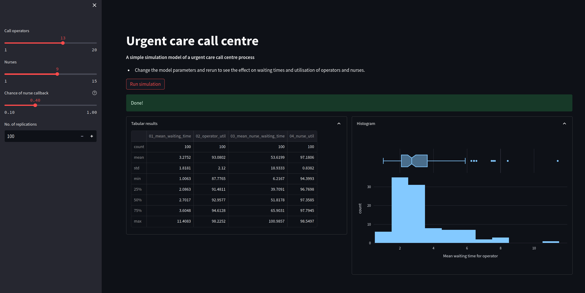

Adding plots#
It is also possible to display matplotlib and plotly figures and plots in streamlit. Here we will explore displaying a histogram of replications for a chosen performance
measure.
We will use plotly to create the chart.
We will also introduce a more advanced layout to our web app by introducing columns to the results page.
1. Imports#
We use plotly.express simplify the creation of our charts. This provides a high level wrapper around plotly
import numpy as np
import pandas as pd
import plotly.express as px
---------------------------------------------------------------------------
ModuleNotFoundError Traceback (most recent call last)
Cell In[1], line 1
----> 1 import numpy as np
2 import pandas as pd
3 import plotly.express as px
ModuleNotFoundError: No module named 'numpy'
from model import Experiment, multiple_replications
2. Code for creating the plotly histogram#
We will run 100 replications of the simulation model and then display the results in a histogram.
We can use the px.histogram method to quickly produce a histogram.
2.1 Get the replications#
default_experiment = Experiment()
results = multiple_replications(default_experiment, n_reps=100)
results.info()
<class 'pandas.core.frame.DataFrame'>
Int64Index: 100 entries, 1 to 100
Data columns (total 4 columns):
# Column Non-Null Count Dtype
--- ------ -------------- -----
0 01_mean_waiting_time 100 non-null float64
1 02_operator_util 100 non-null float64
2 03_mean_nurse_waiting_time 100 non-null float64
3 04_nurse_util 100 non-null float64
dtypes: float64(4)
memory usage: 3.9 KB
2.2. Histogram of mean waiting time#
In addition to the box plot we will also add a boxplot to see the median and the lower and upper quartiles of the distribution.
As an alternative you could try
marginal='violin'ormarginal='rug'
fig = px.histogram(results['01_mean_waiting_time'],
labels={'value':'Mean waiting time for operator'},
marginal="box")
# hide legend
fig.update(layout_showlegend=False)
fig
3. Adding a chart to the web app#
We will make the following changes to the web app script:
Add in a function called
create_hist. This will implement theplotlyhistogram code we included above.Alter the page width using
st.set_page_config(). We are going to show the table of results and chart side by side so we need a slightly wider page layoutCreate two columns for the results using
st.columns(2)Use
st.plotly_chartfunction to display the histogram
The full script is below. Copy and paste this into a file called app_with_chart and run. The figure at the end of this page illustrates the result after running the simulation model.
"""
The code in this streamlit script adds in a basic plotly
chart to display a histogram of replications
"""
import streamlit as st
import plotly.express as px
from model import Experiment, multiple_replications
INTRO_FILE = './resources/model_info.md'
def read_file_contents(file_name):
''''
Read the contents of a file.
Params:
------
file_name: str
Path to file.
Returns:
-------
str
'''
with open(file_name) as f:
return f.read()
################################################################################
# MODIFICATION: code to create plotly histogram
def create_hist(results, column, value_label, marginal='box'):
'''
Create and return a plotly express histogram of
the results column
'''
fig = px.histogram(results[column], labels={'value':value_label},
marginal=marginal)
# hide legend
fig.update(layout_showlegend=False)
return fig
################################################################################
################################################################################
# MODIFICATION: update to wide page settings to display results side by side
st.set_page_config(
page_title="Urgent Care Sim App",
layout="wide",
initial_sidebar_state="expanded",
)
################################################################################
# We add in a title for our web app's page
st.title("Urgent care call centre")
# show the introductory markdown
st.markdown(read_file_contents(INTRO_FILE))
# side bar
with st.sidebar:
# set number of resources
n_operators = st.slider('Call operators', 1, 20, 13, step=1)
n_nurses = st.slider('Nurses', 1, 15, 9, step=1)
# set chance of nurse
chance_callback = st.slider('Chance of nurse callback', 0.1, 1.0, 0.4,
step=0.05, help='Set the chance of a call back')
# set number of replications
n_reps = st.number_input("No. of replications", 100, 1_000, step=1)
# create experiment
exp = Experiment(n_operators=n_operators, n_nurses=n_nurses,
chance_callback=chance_callback)
# A user must press a streamlit button to run the model
if st.button("Run simulation"):
# add a spinner and then display success box
with st.spinner('Simulating the urgent care system...'):
# run multiple replications of experment
results = multiple_replications(exp, n_reps=n_reps)#
st.success('Done!')
############################################################################
# MODIFICATION: create columns for histogram of the results
col1, col2 = st.columns(2)
with col1.expander('Tabular results', expanded=True):
# show tabular results
st.dataframe(results.describe())
with col2.expander('Histogram', expanded=True):
fig = create_hist(results, '01_mean_waiting_time',
'Mean waiting time for operator')
st.plotly_chart(fig, use_container_width=True)
###########################################################################
